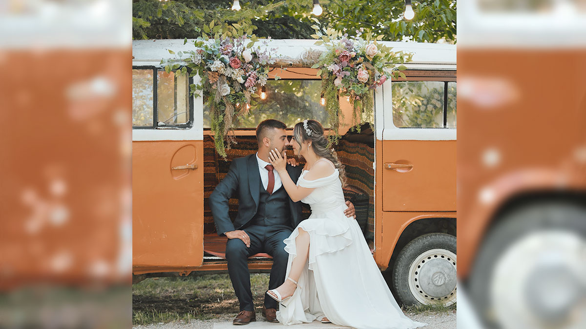
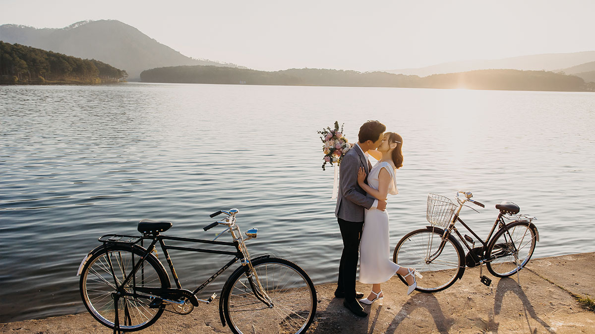

Taro Tanaka
確かな技術と深い眼差しで、おふたりのドラマチックな瞬間を切り取ります。



記念すべき日に向けて、運命の一着と出会う心躍る試着会を。柔らかな光を映すレンズの向こう側で、ふたりの温かな記憶をいつまでも色褪せない記念日に仕立てます。
OUR PHILOSOPHY ── 私たちの想い ↘作り込まれたセットや、型にはまったポーズはいりません。私たちが大切にしているのは、ふたりがこれまで歩んできた記憶の温度と、言葉にしなくても伝わる空気感です。朝の窓辺から差し込む優しい自然光や、ふと見つめ合った瞬間のやわらかな表情。kyouritz photo studioは、カメラマンとの小さな対話から始まります。飾り立てるのではなく、本来の美しさを丁寧にすくい取ること。今日という特別な原点を、何年経っても愛おしく振り返ることができる一枚のポートレートに仕立て上げます。
ふたりらしさが自然に映える、お気に入りのロケーションから。
纏った瞬間、心がときめくドレス・和装・タキシード。気になるスタイルをご覧ください。
何気ない会話を重ねながら、飾り立てない本来の表情と空気感を丁寧に切り取ります。
確かな技術と深い眼差しで、おふたりのドラマチックな瞬間を切り取ります。

歴史ある空間や美しいロケーションを活かし、深みのあるポートレートに仕立てます。
￥10,800〜（税込）
パッケージ内容：衣装、ヘアメイク、レタッチ、アルバム、写真データ
￥21,600〜（税込）
パッケージ内容：衣装、ヘアメイク、レタッチ、アルバム、写真データ
〒164-0001 東京都中野区〇-〇-〇
TEL：03-xxxx-xxxx
営業時間：11:00〜20:00（定休日：火曜日・水曜日）
実際にkyouritz photo studioで撮影された先輩カップルのリアルな声をご紹介します。

SNSの自然な光に惹かれ無料試着会へ。雰囲気の良さと丁寧なカウンセリングで決めました。

年齢を重ねても色褪せない重厚感ある写真を残したく、写真にこだわって選びました。